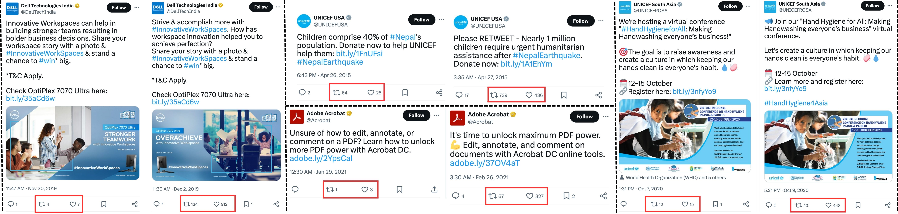

Measuring And Improving Persuasiveness Of Large Language Models
Persuasion Leaderboard
Here are the results of our models on the Persuasion Leaderboard. The leaderboard is based on the paper and the PersuasionArena website.
| Model | Avg. Elo |
|---|---|
| Topline (T2) 🥇 | 1357 |
| Ours (13B) 🥈 | 1293 |
| Ours-Instruct (13B) 🥉 | 1304 |
| Ours (CS+BS) (13B) | 1299 |
| Vicuna-1.5-13B | 1195 |
| LLaMA3-70B | 1099 |
| GPT-3.5 | 877 |
| GPT-4o | 1187 |
| GPT-4 | 1092 |
| Baseline (T1) | 1251 |
| GPT-4 | 1213 |
| Baseline (T1) | 979 |
Transsuasion Examples
A few samples showing Transsuasion. While the account, time, and meaning of the samples remain similar, the behavior over the samples varies significantly.
A few samples showing Transsuasion using our model. The left part contains original low-liked tweet, and the right contains the transsuaded version of the tweet.

Abstract
Crafting a message to elicit a desired response can be time-consuming. While prior research has explored content generation and popularity prediction, the impact of wording on behavior change has been underexplored. We introduce the concept of transsuasion (trans = carrying across, suasion = the act of persuading, transsuasion = the act of carrying across text from non-persuasive to persuasive).
- Data Generation. We utilize pairs of tweets by the same user with similar meanings but varying wording and likes to study transsuasion.
- LLM Persuasion. Our research shows that larger language models (LLMs) are more effective at identifying which tweet versions attract more likes and can transform low-performing versions into high-performing ones.
- Model Efficiency. We demonstrate that smaller LLMs can be optimized to surpass larger LLMs in persuasion abilities.
- Resources. We introduce PersuasionBench and PersuasionArena, providing a benchmark and a suite of tasks for evaluating and enhancing persuasion in text. Our benchmarks and models are publicly available.
 Transsuasion Data
Transsuasion Data
| Case | Username | Media Filter | Link Match | Text | Edit | Likes % | Input | Output | #Samples |
|---|---|---|---|---|---|---|---|---|---|
| Refine text (Ref) | Same | No Images | No | >0.8 | - | 40 | T1 | T2 | 265k |
| Paraphrase (Parap) | Same | No Images | No | >0.6 | >0.6 | 40 | T1 | T2 | 163K |
Transsuade and Add Image (AddImg) |
Same | Image only on o/p side |
No | >0.6 | >0.6 | 40 | T1 | T2, I2 | 48k |
Free-form refine with text and optionally visual content (FFRef) |
Same | Image on either or both sides |
No | >0.8 | - | 40 | T1,I1 | T2,I2 | 701k |
Free-form paraphrase with text and optionally visual content (FFPara) |
Same | Image on either or both sides |
No | >0.6 | >0.6 | 40 | T1,I1 | T2,I2 | 24k |
Transsuade Visual Only (VisOnly) |
Same | Image similarity > 0.7 | No | - | - | 40 | T1,I1,T2 | I2 | 68k |
Transsuade Text Only (TextOnly) |
Same | Image on o/p side or both sides |
No | >0.8 | - | 40 | T1,I1,I2 | T2 | 69k |
Highlight Different Aspects of Context (Hilight) |
Same | Images Ignored | Yes | >0.6 | >0.6 | 40 | T1,Con1,I1 | T2,I2 | 241k |
Transcreation (Transc) |
Brand | Images Ignored | Ignored | >0.8 | >- | 20 | T1,U1I1 | T2,U2I2 | 131k |
 Human Eval
Human Eval
To participate in the Human Eval fill the following form
You need to accept the Terms of Service beforehand
BibTeX
@article{singh2024measuring,
title={Measuring and Improving Persuasiveness of Large Language Models},
author={Somesh Singh and Yaman K Singla and Harini SI and Balaji Krishnamurthy},
year={2024},
journal={arXiv preprint arXiv:2410.02653}
}
Terms Of Service
Users are required to agree to the following terms before using the service
The service is a research preview. It only provides limited safety measures and may generate offensive content. It must not be used for any illegal, harmful, violent, racist, or sexual purposes. Please do not upload any private information. The service collects user dialogue data, including both text and images, and reserves the right to distribute it under a Creative Commons Attribution (CC-BY) or a similar license.
They are also restricted to uses that follow the license agreement of Twitter, and LLaMA
Acknowledgement
We thank Adobe for their generous sponsorship.
We thank the LLaMA team for giving us access to their models, and open-source projects, including Vicuna.